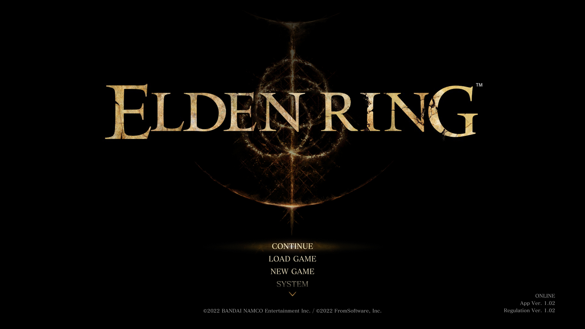

ゲームの始めかた
タイトルメニュー
ゲームを起動すると、以下のメニューが選択できます。
初めてプレイするときは「CONTINUE」と「LOAD GAME」は選択できません。
CONTINUE
最後にプレイしたデータで再開します
LOAD GAME
読み込むプロファイルを選んで再開します
NEW GAME
最初からゲームプレイを開始します
SYSTEM
各種設定を行います。［メインメニュー］＞［システム］でいつでも変更できます
INFORMATION
オンラインの場合、サーバー状況などさまざまなお知らせを確認できます
CONVERT SAVE DATA
-
本体に保存されているPlayStation®4版のセーブデータを読み込んで、PlayStation®5版のセーブデータを作成します。
実行した場合、既存のPlayStation®5版のセーブデータは上書きされ、失われます。
ゲームを中断する時は
「ELDEN RING」では、特定のタイミングに自動でセーブされます（オートセーブ）。このとき、画面右上にオートセーブアイコンが表示されます。前回のデータは上書きされるのでご注意ください。
ゲームを中断するときは必ず［メインメニュー］＞［システム］＞［ゲーム終了］から終了してください。［ゲーム終了］を選択せずに終了すると、終了時の状態から再開できない場合があります。
ネットワークプレイについて
PlayStation™Networkにサインインしてプレイして専用のゲームサーバーに接続すると自動的にネットワークプレイとなります。ネットワークプレイでは、ほかのプレイヤーのようすを感じられたり、ほかのプレイヤーと協力、敵対プレイを楽しむことができます。
通信を許可するポート
ネットワーク機器の設定によっては、通信を許可するポートを設定する必要があります。
ネットワークプレイでは、以下のポートを使用しています。
TCP : 80, 443, 3478, 3479, 3480, 10901
UDP : 3478, 3479, 8571, 49152～65535